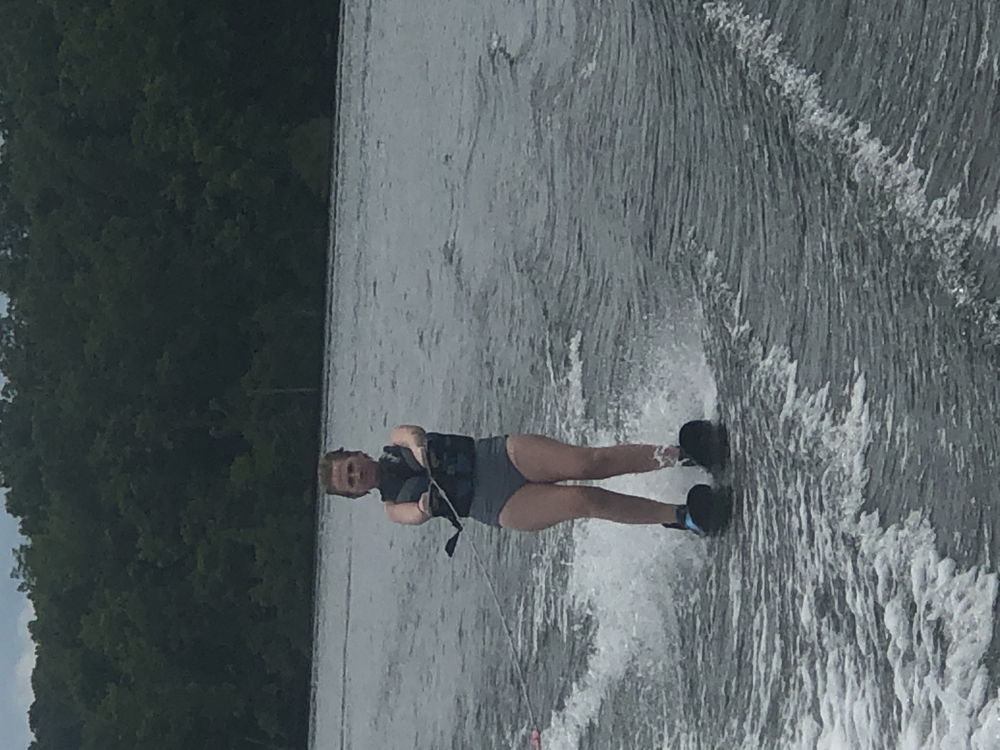
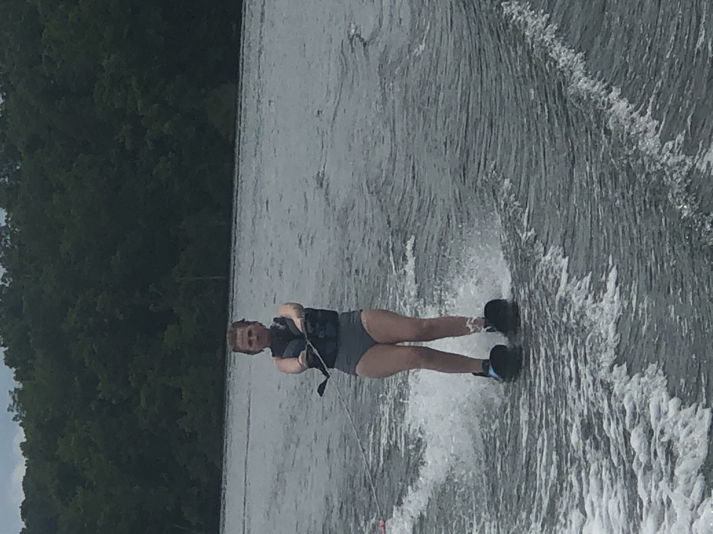

Water Skiing in Arkansas
Many summers growing up, my family would go with other family friends to the lake. It was during one of these summers that I leared how to water ski.
Hello World! My name is Valerie and I LOVE being active. For me, physical activity is about more than just my physical health -- it's also mental. I have struggled with an anxiety disorder my whole life, although I did not fully adress it until I was 20 years old. Staying active has been such a huge proponent of taking care of my mental health. I love both indoor and outdoor sports. My menatl health journey has been a life long one, but I cannot encourage folks with mental health disorders more to stay active! Don't know where to start? Check out some of my ideas below!
Many summers growing up, my family would go with other family friends to the lake. It was during one of these summers that I leared how to water ski.
For five months in 2019-2020, I lived in Denver, CO and loved exploring God's creation with my roommate.

I recently went rock climbing for the first time with a close friend and had so much fun! It was physically exhausting like nothing I've ever done before.

As a child, I was not a fan of the water, but now I love it! Kayaking is one of my favorite ways to soak up some sun.

My dog, Bentley, loves to go on hikes with me! Although small as he is, he love a good long hike!

Shorly after college graduation, I decided I wanted to train for a triahtlon. Thus began my love for swimming. (Again, pretty ironic as I didn't like the water as child!) Just last week I swam a PB in my 100 m freestyle so I'm basically an Olympian now. 😉